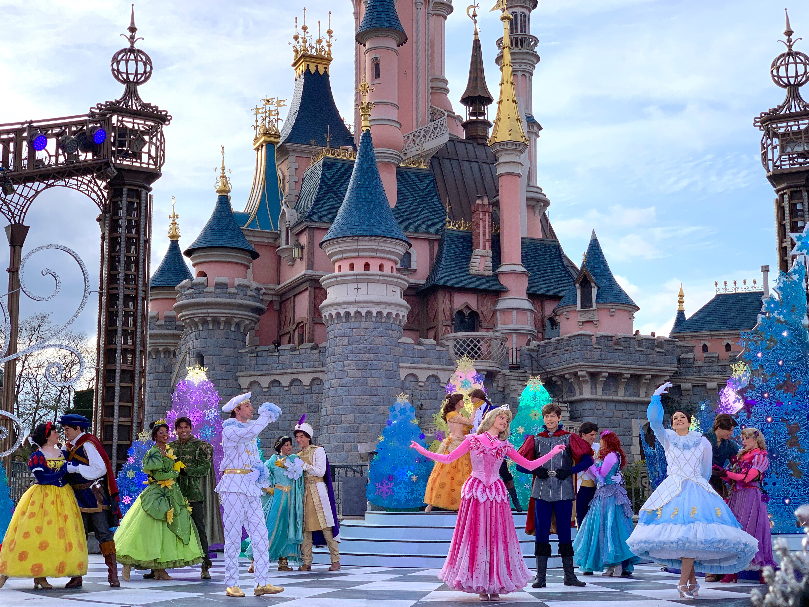

1. New York
Times Square

Known as "The Crossroads of the World," Times Square is famous for its bright
billboards, Broadway theaters, and bustling atmosphere. Visitors come to
experience the energy of the city, shop, dine, and attend live performances.
Statue of Liberty and Ellis Island
These landmarks symbolize freedom and represent America's history as
a land of opportunity. Visitors take ferries to see the Statue of
Liberty up close and explore Ellis Island's Immigration Museum.
Central Park
This expansive urban park offers a peaceful respite from the city's hustle
and bustle. Visitors can enjoy picnicking, cycling, boating, visiting
the Central Park Zoo, or simply strolling through its scenic paths.
2. California
Golden Gate Bridge

One of the most famous bridges in the world, the Golden Gate Bridge attracts
visitors for its iconic red-orange color and panoramic views of the San
Francisco Bay. It is a must-visit landmark for photography enthusiasts.
Disneyland
The original Disneyland theme park is a beloved attraction for families
and Disney enthusiasts. Visitors come to experience the magic of
Disney characters, thrilling rides, and immersive entertainment.
Hollywood Walk of Fame

This iconic walkway along Hollywood Boulevard features the stars engraved
with the names of famous celebrities. Visitors come to see their favorite stars,
take photos, and immerse themselves in Hollywood's glamorous atmosphere.
3. Washington
The National Mall

This stretch of iconic museums, monuments, and memorials includes
the Washington Monument, Lincoln Memorial, and the Smithsonian museums.
Visitors come to immerse themselves in America's history and culture.
Space Needle

This futuristic tower offers breathtaking views of the city and surrounding
mountains. Visitors come to take in the panoramic views from the observation deck,
dine in the revolving restaurant, and experience the elevator's glass floor.
Olympic National Park

Located on the Olympic Peninsula, this national park offers diverse ecosystems,
including rugged mountains, old-growth forests, and picturesque coastline.
Visitors come for outdoor activities like hiking, camping, and wildlife watching.
1. New York
2. California
3. Washington